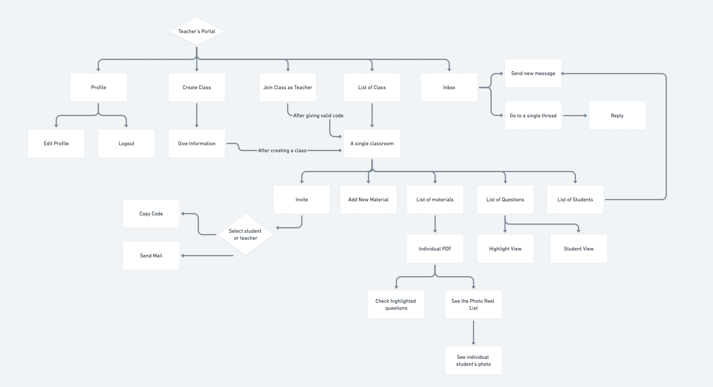
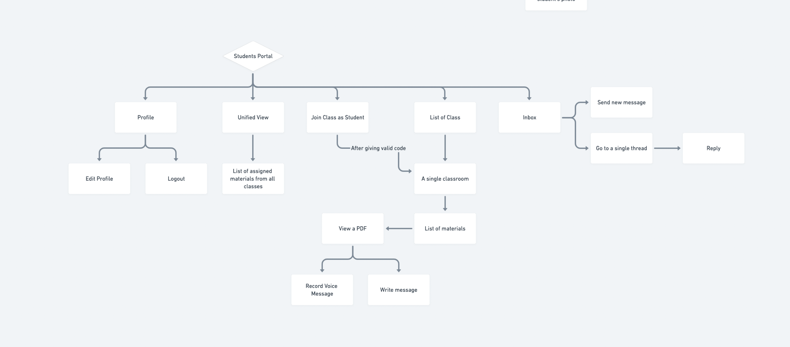
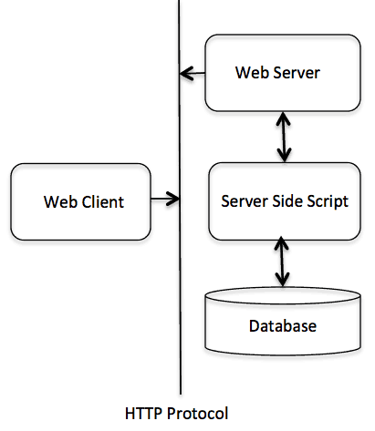
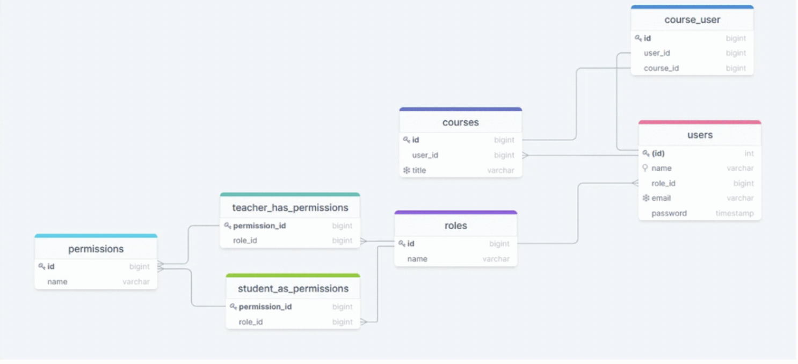

Contents
- 1 Introduction
- 2 Overall Description
- 2.1 Product Perspective
- 2.2 Product Functions
- 2.3 User Classes and Characteristics
- 2.4 Operating Environment
- 2.5 Design and Implementation Constraints
- 2.6 User Documentation
- 2.7 Assumptions and Dependencies
- 3 External Interface Requirements
- 4 System Features
- 4.1 Sign-up to system
- 4.2 Log-in to system
- 4.3 Create classroom
- 4.4 Assign PDF files as reading materials
- 4.5 Send classroom code to students
- 4.6 Provide photograph
- 4.7 Read assignment
- 4.8 Run face recognition module on students
- 4.9 Edit assignment
- 4.10 Delete assignment
- 4.11 Join Classroom
- 4.12 View Assignments on a per-class basis
- 4.12 View Assignments as a unified list
- 5. Other Nonfunctional Requirements
- 6.Other Requirements
- Appendix A: Glossary
- Appendix B: Analysis Models
- Appendix C: To Be Determined List
Revision History
| Name | Date | Reason For Changes | Version |
|---|---|---|---|
| First Publication | July 18, 2021 | - | v1.0 |
| Second Publication | September 13, 2021 | Database models and libraries updated | v2.0 |
Introduction
1.1 Purpose
Purpose The purpose of this document is to present a detailed description of the "Reading Progress App". It will explain the purpose and features of the system, the possible interfaces of the system, what the system will do, the constraints under which it must operate and how the system will react to external stimuli. This document is intended mostly for people involved with the developement of the system, along with users of the system and any other interested parties.It describes the whole system in its current version, v2.0.
1.2 Document Conventions
This document was created based on the IEEE Software Requirements Specification. Which was released in 1999 by Karl E. Wiegers. We have followed a few key conventions of our own for this document, those points are described below.- HTML semantics of H1, H2, Paragraph to denote specific sections and it's content. Each content block is lablled with the respective section no. and sub-section no. For example: "1.4 Product Scope" means it is the fourth sub-section of the first section.
- Italic is has been mildy used in a few places to denote terms. We have also used italic for the labels of the images or figures.
-
In the "4.System Features" section, we have used the expanded use case diagram to describe the features. Roman
numeric characters (I, II, III, IV..) have been used to describe actor actions and system response.
To refer alternative course of events, we have added another number with that. So, 'III.2' means that this is the "second alternative event" for the "third typical events".
1.3 Intended Audience and Reading Suggestions
The document is mostly intended for developers, project managers, testers, and documentation writers. The rest of the SRS consists of the overall description of the product, including its classes and characteristics, the operating environment, design and implementation constraints, any assumptions taken, etc. It also consists of external interface requirements, the system features, and other non-functional requirements. It would be best to begin with the overall description section, then proceed to the system features, then to the remaining requirements sections.A sperate document as user manual will be created after the first major relase of the product.
1.4 Product Scope
The purpose of the software is to be allow teachers to assign reading material and keep track of the reading progress of their students. Teachers can sign up to the system, create a classroom, assign PDF files, and be able to see questions asked and sections marked by students. The objective is to track the students’ reading progress on the assigned material, and the benefits of using the software include being able to determine better strategies to help students read faster and understand better. The goal of using the product is to improve the reading ability and speed of students.
1.5 References
- Figma Design File. This contains the mockup for our user interface.
- Material Design Guideline. For the Android Version of the App, we will follow the material design system provided by Google.
- Tailwindcss Component Library. For the Web Version of the App, we will use Tailwindcss library.
2.Overall Description
2.1 Product Perspective
The software is a new, self-contained product, and is not a sub-system of a separate product.
2.2 Product Functions
- Users should be able to sign up to the system as a Teacher or a Student.
- Students need to provide a recent photograph when signing up.
- Teachers should be able to create classroom
- Teachers should be able to send invitation code to students
- Students and Teachers can join classroom through invitation code
- Teacher can assign PDF files as reading material to students in a class
- Students can see their reading tasks and deadlines on a per-class basis but also as a unified list
- When a student decides to read a particular material, the system will open and display the material by itself (no download allowed)
- Students should be able to zoom in and out in the material
- Students should be able to view material page by page
 Figure: Overveiw of the Teachers Portal's Flow
 Figure: Overveiw of the Students Portal's Flow
2.3 User Classes and Characteristics
There are 2 user classes, distinguishable by privilege levels: Student and Teacher. The Student is expected to be Internet literate and be able to use PDF viewers effectively. The Teacher is expected to be Internet literate and to be able to use email with attachments, and be able to use buttons, pull-down menus, and similar tools.Student' characteristics:
- Sign up to the system as a Student.
- Create a profile
- Provide a recent photograph when signing up.
- Join classroom through invitation code
- See their reading tasks and deadlines on a per-class basis, but also as a unified list
- View the material posted by the teacher.
- Zoom in and out in the material
Teacher's characteristics:
- Sign up to the system as a Teacher.
- Create classroom
- Send invitation code to students through email
- Assign PDF files as reading material to students in a class
- View questions recorded/stored by students
- Join a classroom using a code
2.4 Operating Environment
Software will operate on any major desktop operating system or mobile system with a web browser. A functioning web browser is required for the product to operate properly. Mobile systems are supported till Android version 5.x.x.
2.5 Design and Implementation Constraints
Android App have to be designed in Java. The web application will be developed in Laravel 8.x. A MySQL database must also be used, and knowledge regarding PHP, Html, CSS, and vue.js is needed, as well as proficiency in Laravel framework.
As rule of thumb, we will be using the MVC Design Pattern as both Android & Laravel architecture supports that. Also, the code will be writtent in a way that no logical block will be written twice in the code.
2.6 User Documentation
- User Manual for the end users will be delievered.
- A brief API Documentation will be also provided with the end product so that we can adhere to that in the future.
2.7 Assumptions and Dependencies
Dependencies include using Livewire, Laravel UI, Tailwind CSS, Jetstream, Grade packages. Assumptions that we will have to use some sort of library to detect and recognize faces. As well as to parse the PDF into the mobile view.3.External Interface Requirements
3.1 User Interfaces
User interface of our application will be easy to use and understandable. It has been written in clear and concise language. Moreover, the user is expected to know the basics of how to use Web and Android applications.A few sample screens are added here to showcase the visual aesthetic, error message style and overall pattern. The full design documentation will be on our Figma file that has been linked in the 1.5 References section.

3.1.1 Login Interface
In this interface, there will be a button to login with Google, a username field, a password field, a corresponding login button and a register button. User can login to our application using google or username based on how they registered to our system in the first place. If the user has not registered to the application yet, they need to click the register button in order to login.3.1.2 Register Interface
In this interface, user can register to the system using their Google account, or by giving the required information in the available fields. After filling all the required fields, user may click the register button. After registering successfully, user can login to the system.3.1.3 Teacher Interface
In this interface, user can create a new class, add students to classes, assign reading materials, view queries from students etc.3.1.4 Student Interface
In this interface, user can join classes with teacher provided codes, view assigned materials, and ask questions (in written or verbal form).3.2 Hardware Interfaces
The subsection documents all required constraints associated with minimum or actual hardware.• Camera-enabled device
Supported devices include major hardware devices that can access the web 2.0 via a modern web browser and has a functional camera. Including Android Phones, Laptop, Desktop. User needs to have a camera enabled device because our application needs to monitor user activity through taking photos of the user.
3.3 Software Interfaces
This application works on both web and android platform. To enjoy all the features without any difficulty a browser supporting html 5 technology and Android version 5.0.x or higher is required. We will be using HTTP and TCP/IP protocol to connect with the camera and APIs. We will be using RESTful API in our system.
We will be using RESTful API in our system.
3.4 Communications Interfaces
Our application uses HTTP and TCP/IP request over the internet or local files to access the database using API.
4.System Features
 Fig: Use Case Diagram
Fig: Use Case Diagram
4.1 Sign-up to system
Actor: Teacher, Student
Description: User needs to register to the system for using the functionalities.
Type: Primary
Typical Course of events
| Actor Actions | System Responses |
|---|---|
| I.Clicks on the Create New Account button. | II.Redirects to the registration interface. |
| III. Clicks on Register with Google button, or fills up all required fields of the form and clicks on Register button. | IV. Creates an account saving the information to database and sends a confirmation email. |
Alternative Course of Events
III.1 User forgets to fill up required fields before clicking on register button: System generates a message saying “Fill all required fields”.4.2 Log-in to system
Actor: Teacher, Student
Description: User needs to log-in to the system to use the product.
Type: Primary
Cross-reference: 4.1- Sign-up to system
Typical Course of events
| Actor Actions | System Responses |
|---|---|
| I. Clicks on the login button. | II. Takes user to login interface |
| III. Fills username and password fields. Or, clicks on Login using google account. | IV. Redirects to the student/teacher interface based on account credentials. |
Alternative Course of Events
III.1 User inserts an unregistered email address: System generates a message to “Sign Up first”.III.2 User inserts wrong password: System generates a message “Incorrect Password”.
III.3 User cannot remember password: User clicks on ‘Forgot Password?’ button, and system redirects them to
password recovery interface.
4.3 Create classroom
Actor: Teacher
Description: A valid Teacher account holder can create classrooms.
Type: Primary
Cross-reference: 4.2- Log-in to system
Typical Course of events
[Includes Log-in to system Use Case]
| Actor Actions | System Responses |
|---|---|
| I. Clicks on the Create classroom button. | II. Presents a form to fill-up. |
| III. Gives a unique title for the classroom. | IV. Creates the classroom. |
| V.Stores course information in the database. |
Alternative Course of Events
II.1. Teacher gives an already existing title for a new classroom: System generates an error message “This title has already been taken.”IV.1. System encounters an error and fails to create classroom: System generates error message and prompts user to re-enter classroom information.
4.4 Assign PDF files as reading materials
Actor: Teacher
Description: A valid teacher account holder can send invitation code to students and teachers so that they can
join the classroom.
Type: Primary
Cross-Reference: 4.2 Log-in to system
Typical Course of events
[Includes Log-in to system Use Case]
| Actor Actions | System Responses |
|---|---|
| I. Goes to Classroom page for a specific classroom. | II. Redirects to material assigning interface. |
| III. Clicks on Create Assignment button. | |
| IV. Selects the PDF file & send code. | |
| V.Add the email address of the teacher or student. | |
| VI. Clicks on the Assign Material button. | VII. Creates Assignment in classroom |
Alternative Course of Events
IV.1. Teacher selects file of an incorrect format: System generates error message “No file uploaded or invalid file type”.IV.2. Teacher clicks Assign Material button without having uploaded a PDF file: System generates error message “No file uploaded or invalid file type”.
IV.3. Teacher gives an already existing title for a new assignment: System generates an error message “This title has already been taken”.
VI.1. System encounters an error and fails to create assignment: System generates an error message and prompts user to re-enter classroom information.
4.5 Send invitation code
Actor: Teacher
Description: A valid teacher account holder can send invitation code to students for joining the classroom.
Type: Primary
Cross-Reference: 4.2 Log-in to system
Typical Course of events
[Includes Log-in to system Use Case]
| Actor Actions | System Responses |
|---|---|
| I. Goes to Classroom page for a specific classroom. | |
| II. Clicks on the Send Invitation button. | III. Redirects to Invitation interface. |
| IV. Adds the email addresses of the students and clicks Send button. | V. Sends students an email with the invitation code to join the classroom. |
Alternative Course of Events
IV.1. Teacher adds email address in incorrect format: System generates an error message and prompts user to re-enter the email address4.6 Update Profile picture
Actor: Student
Description: A student account holder can update their photograph from the default picture.
Type: Primary
Cross-reference: 4.2 - Log-in to system
Typical Course of events
[Includes Log-in to system Use Case]| Actor Actions | System Responses |
|---|---|
| I. Clicks on "Update Profile picture" | |
| II.Redirects student to a form | |
| III. Chooses a picture of themselves. | |
| IV. Uploads their photograph. | IV. Saves the photograph in database. |
Alternative Course of Actions
III.1. Student uploads an image in an invalid format: System generates error message “No file uploaded or invalid file type”.III.2. Student uploads no image: System generates error message “No file uploaded or invalid file type”.
4.7 View assignment
Actor: Teacher and student
Description: A valid student account holder can access the assigned reading materials in the classroom.
Type: Primary
Cross-Reference: 4.2 Log-in to system
Typical Course of events
[Includes Log-in to system Use Case]
| Actor Actions | System Responses |
|---|---|
| I. Clicks on an assignment. | II. Redirects user to PDF view interface |
| III. Clicks on Next/Previous button. | VI. Redirects to the appropriate page. |
Alternative Course of Actions
III.1. User does not grant the system permission to use their camera: System prompts user to provide permission to use their camera again.IV.System encounters an error when opening the assignment: System generates an error message.
4.8 Zoom-In and Zoom-out of PDFs
Actor: Student
Description: A valid student account holder can zoom in or out in an assigned reading material in the classroom.
Type: Primary
Cross-reference: 4.9- Read Assignment
Typical Course of events
[Includes Read Assignment Use Case]| Actor Actions | System Responses |
|---|---|
| I. Clicks on zoom-in option inside assignment reading interface. | II. Zooms in to PDF file. |
| III. Clicks on zoom-out option inside assignment reading interface. | IV. Zooms out of PDF file. |
4.9 Edit assignment
Actor: Teacher
Description: A teacher can edit the details of any assigned reading materials in the classroom.
Type: Primary
Cross-reference:
- 4.2: Log-in to system
- 4.3 Create Classroom
- 4.4 Assign PDF files as reading materials
- 4.11 Join Classroom
Typical Course of events
[Includes Log-in to system, Create Classroom, Join Classroom, and Assign PDF files as reading materials Use Cases]| Actor Actions | System Responses |
|---|---|
| I. Clicks on 'Edit assignment' | II. Redirects teacher to the edit form for the assignment |
| III. Fills in the necessry fields. | VI. Validates the field information. |
| VII. Updates the assignment information in the database. |
Alternative Course of Events
III.1: Teacher enters information in the incorrect format: System generates an error message.VII.1:System encounters an error when updating the assignment: System generates an error message.
4.10 Delete assignment
Actor: Teacher
Description: A teacher can delete any assigned reading materials in the classroom.
Type: Primary
Cross-reference:
- 4.2: Log-in to system
- 4.3 Create Classroom
- 4.10 Assign PDF files as reading materials
- 4.11 Join Classroom
Typical Course of events
[Includes Log-in to system, Create Classroom, Join Classroom, and Assign PDF files as reading materials Use Cases]| Actor Actions | System Responses |
|---|---|
| I. Clicks on 'Delete assignment' | II. Deletes the assignment from the database |
| III.Redirects user to the course page |
Alternative Course of Events
II.1:System encounters an error when deleting the assignment: System generates an error message.4.11 Join Classroom
Actor: Teacher and Student users
Description: A teacher or a student can join a classroom by entering a class code.
Type: Primary
Cross-reference:
- 4.2: Log-in to system
Typical Course of events
| Actor Actions | System Responses |
|---|---|
| I.Clicks on 'Join Classroom' | II. Prompts user to enter a class code |
| III. Enters class code | IV. Adds user to the corresponding classroom |
| V. Redirects user to their classroom page |
Alternative Course of Events
II.1:System fails to find the corresponding classroom: System generates an error message.IV.1: System encounters an error while adding user to the classroom: System generates an error message.
4.12 View Assignments on a per-class basis
Actor: Teacher
Description: A student can view every assignment they have for each class they are enrolled in.
Type: Primary
Cross-reference:
- 4.2: Log-in to system
- 4.11 Join Classroom
Typical Course of events
[Includes Log-in to system, and Join Classroom use Cases]| Actor Actions | System Responses |
|---|---|
| I. Go to 'View assignments' | |
| II. Clicks on the course they want to view assignments for. | |
| II. Fetches all assignments for that particular course | |
| III. Presents user with the assignments for the specified course |
4.13 View Assignments as a unified list
Actor:Student
Description: A student can view all assignments from every course they are enrolled in as a unified list
Type: Primary
Cross-reference:
- 4.2: Log-in to system
- 4.11 Join Classroom
Typical Course of events
[Includes Log-in to system, and Join Classroom use Cases]| Actor Actions | System Responses |
|---|---|
| I. Go to 'View assignments' | II. Fetches all course assignments for the user |
| III. Fetches all assignments for that particular course | |
| IV.Presents user with the assignments from every course they are enrolled in |
Alternative Course of Events
II.1:System encounters an error when fetching the assignments from the specified courses: System generates an error message.
5.Other Nonfunctional Requirements
5.1 Performance Requirements
Our application runs over the internet. If there is no connectivity issues from the user end, it is supposed to run in real-time, as normally http responses take less than a second. However, we will be using third-party software for image recognition. Thus, we can’t guarantee the performance of that engine. Face recognition will require quality image in proper light and angle.5.2 Safety Requirements
Pictures of students will be taken as part of tracking their reading progress, therefore, to protect them from possible harm, we will have to take permission while signup.5.3 Security Requirements
Sensitive data like password of the users shall be encrypted. We will also use HTTPS over HTTP if we deploy our code into a global server.5.4 Software Quality Attributes
This software preferes correctness, portability and testibility over everything else. However, we will also foucs on the aspects of reliability, reusability, and usability.5.5 Business Rules
Not applicable.
6.Other Requirements
Appendix A: Glossary
| Terms | Meaning |
|---|---|
| SRS | Software Requirement Specification |
| API | Application Programming Interface |
| HTTP | Hyper Text Transfer Protocol |
| HTTPS | Hyper Text Transfer Protocol Secured |
| TCP/IP | Transmission Control Protocol/Internet Protocol |
Appendix B: Analysis Models
Initial DB Schema with Role Permission